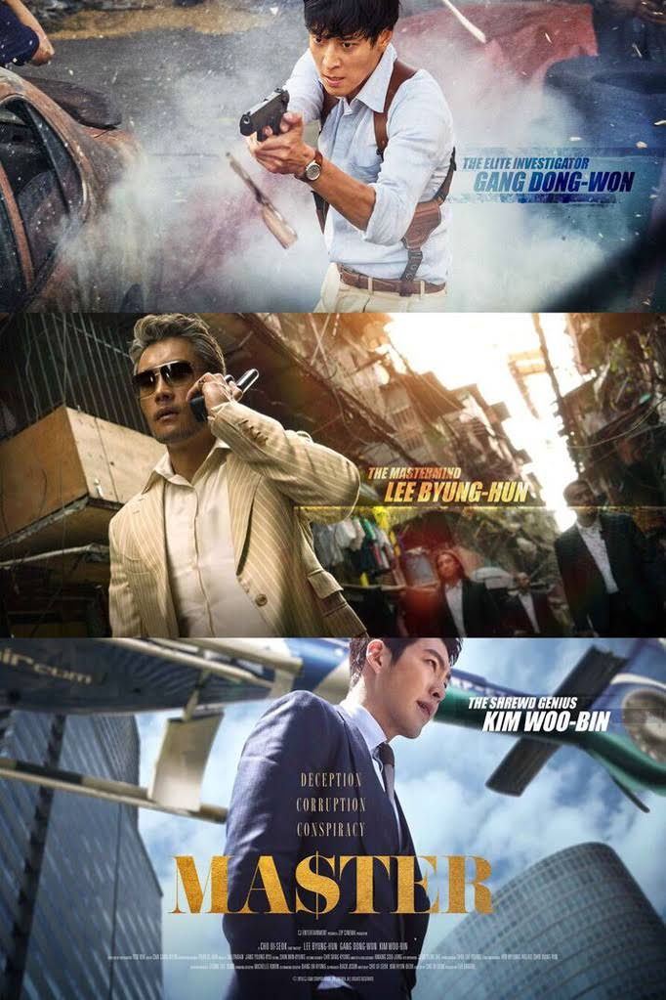
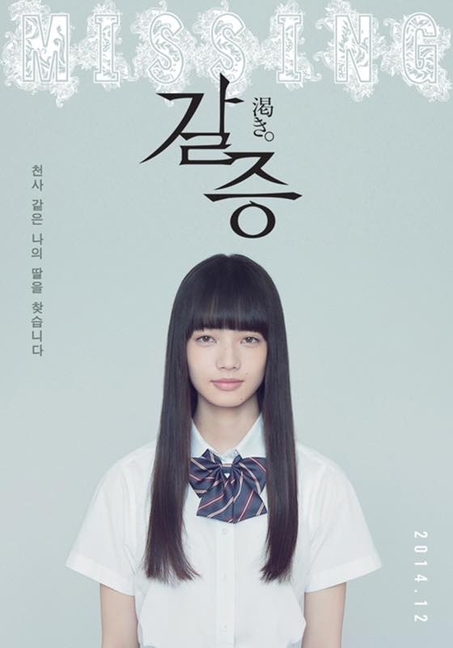

잼나게봤음. 김우빈 배우 매력있다.
이래저래 나라꼴이 깝깝하니 자꾸 이런 영화가 나오나 싶다 ^^;;
아수라 2016
어으 징그러;;; 과함;;
비밀은없다 2016
손예진 멋있따. 이것도 잼나게 봤음.
터널 2016
SO TRUE
미쓰와이프 2015
가족의 소중함을 말하고 싶은건가? 생각보다 재미있게 봤지만 공감은 잘 안되었음 ^^;;
성난변호사 2015
대체적으로 평이 안좋았던 걸로 기억하는데 예상했던거 보다는 잼나게 봤당.
파리지엔느 프로젝트 2013
너무 해피엔딩인데 ㅋㅋㅋㅋㅋㅋㅋㅋ 세상일이 이리 쉬우면 얼마나 좋아 ㅋㅋ

갈증 2014
소설책 읽을때 정신없이 빠져서 몰입도 장난 아니었는데 다 읽고 난 후 굉장히 찝찝했던 기억이 있는데
영화도 그럼 -_- too much;;
고마츠 나나 매력있당//
감독이 나카시마 테츠야 였넹. 혐오스런 마츠코의 일생 영화는 정말 좋아합니다.
중경삼림 1994
좋아하는 사람은 정말 좋아하던데 내취향은 아닌걸로;;
1/2 보다 포기했습니다 :p
웜바디스 2013
생각보다 괜찮았음 ^^;;; 엄청 지루하고 오글거릴줄 알았는데 ㅋㅋㅋ
좀비도 역시 미모가 되야....